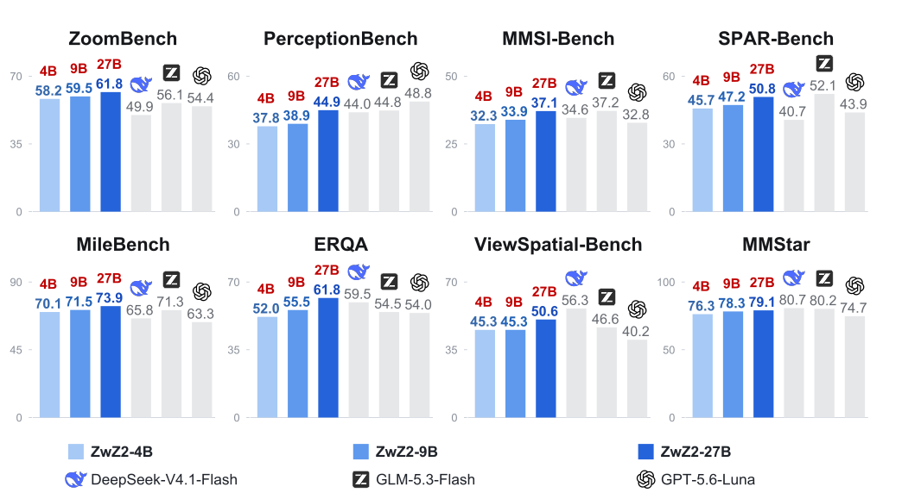
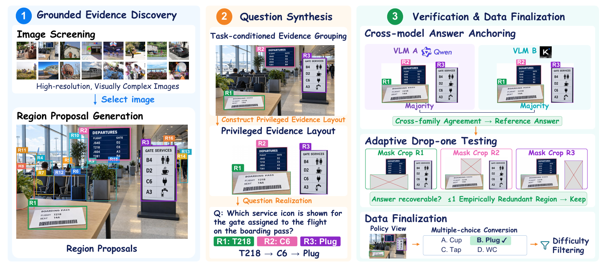
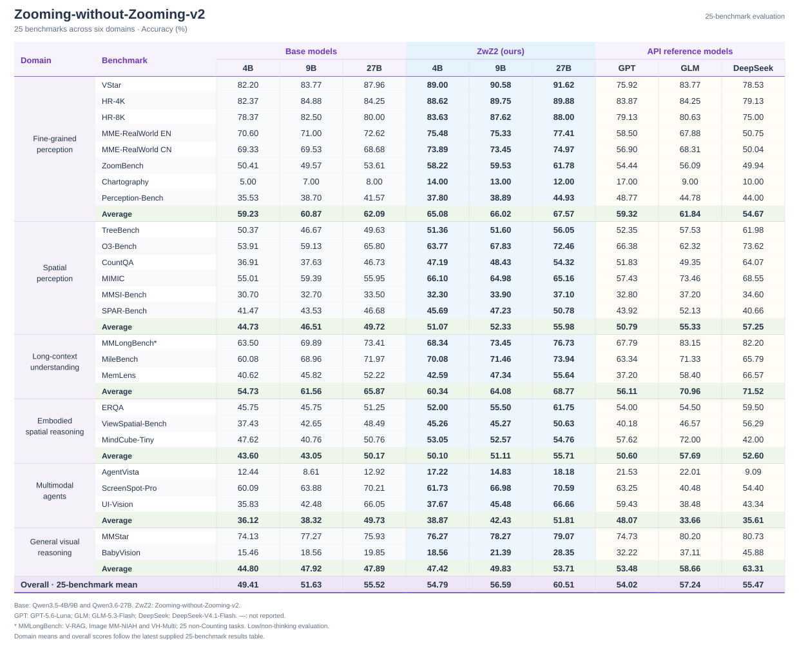

Zooming without Zooming v2 (ZwZ-v2)
✨ Introduction
Zooming without Zooming v2 connects fine-grained visual evidence across regions. We train ZwZ2-4B/9B/27B with reinforcement learning on 20.4K verified, multi-region VQA examples. Training uses full images; inference needs no zooming tools. The models transfer across perception, spatial reasoning, long-context understanding and multimodal agents.

⚙️ Method
EvidenceConnect turns evidence from 3–7 image regions into verifiable supervision:
- Discover grounded regions and synthesize questions that connect their evidence.
- Verify answers through cross-model agreement and adaptive region-ablation tests.
- Train on the full-image view with GRPO, without supervised fine-tuning.

📊 Performance
Results on 25 benchmarks across six domains (accuracy, %).

🤗 Models and Data
| Model | Base model |
|---|---|
| ZwZ2-4B | Qwen3.5-4B |
| ZwZ2-9B | Qwen3.5-9B |
| ZwZ2-27B | Qwen3.6-27B |
All three scales use the same 20.4K training examples, synthesized from SA-1B images with cross-model verification. Privileged crops are used during data construction only; the policy learns from the full-image view.
🚀 Getting Started
| Component | Directory |
|---|---|
| Data synthesis | data_synthesis/ |
| Training | verl/ |
| Evaluation | eval/ |
1. Data synthesis (data_synthesis/)
Setup
bashcd data_synthesis cp configs/local_env.sh.example configs/local_env.sh # then edit keys/model names pip install openai httpx pillow pyarrow pytest
Set your API URL, keys and model names in configs/local_env.sh (gitignored).
Run
The only input is a folder of images:
bash# 1) Stage 01 — scan the image folder, build a manifest, and drop # low-content images (resolution / entropy / edge density / std-dev): python scripts/01_filter_manifest.py \ --image_folder /path/to/images \ --output_jsonl data/filtered_manifest.jsonl # 2) Continuous synthesis over the filtered manifest: bash run_pipeline_continuous.sh [TARGET_VALID] [BATCH_SIZE] [MAX_BATCHES] [MANIFEST] # MANIFEST defaults to data/filtered_manifest.jsonl (the stage-01 output)
Export training data
The synthesized records are exported to a verl-ready parquet for RL training:
bashpython scripts/05_export_dataset.py \ --validated_jsonl data/all_valid.jsonl \ --output_parquet mcq_train.parquet \ --format mcq
--format mcq is the multiple-choice format consumed by the training launchers below. Any verl-format validation parquet can be used as the evaluation set.
Tests
bashpytest -q tests/
---
2. Training (verl/)
Train with GRPO using verl. Choose the launcher for your base model:
| Model | Script |
|---|---|
| Qwen3.5-4B | verl/train_zwz2_qwen3_5_4b.sh |
| Qwen3.5-9B | verl/train_zwz2_qwen3_5_9b.sh |
| Qwen3.6-27B | verl/train_zwz2_qwen3_6_27b.sh |
Setup
bashpip install -e ./verl # install the vendored verl framework
Run
Set the model and dataset paths:
bashcd verl MODEL_PATH=/path/to/Qwen3.5-9B \ TRAIN_FILE=/path/to/mcq_train.parquet \ TEST_FILE=/path/to/val.parquet \ bash train_zwz2_qwen3_5_9b.sh
Run the same way for the other sizes; checkpoints, logs and rollout dumps are written under outputs/<experiment-name>/ (override with EXPERIMENT_ROOT).
---
🧪 3. Model Evaluation (eval/)
bashcd eval python -m pip install -e '.[api,data]'
1. Configure
bashpython -m zwz_eval init --directory local/my-eval --bench hr4k,hr8k
Edit local/my-eval/model.json with your model/judge paths, identities, GPU settings and output directory. Set downloaded annotation/image paths and input formats in local/my-eval/datasets.json. Replace all example values before running.
2. Prepare data
Download and extract the benchmarks, then prepare them:
bashbash scripts/prepare_benchmarks.sh local/my-eval
This writes local/my-eval/ready.json without modifying the original downloads.
3. Evaluate
bashbash scripts/evaluate.sh local/my-eval
The command evaluates the configured benchmarks serially, managing model startup, inference, required judging and service cleanup. To select a subset, append IDs such as hr4k,hr8k.
Benchmark data format
MMStar, BabyVision, VStar, HR-4K, HR-8K, MME-RealWorld-en/cn, ZoomBench, Perception-Bench, TreeBench, O3-Bench and CountQA require JSONL or a JSON array with images, query and response fields:
json{ "images": ["/path/to/images/image.png"], "query": "<image>Original question and answer choices", "response": "Reference answer" }
Use format: normalized for these benchmarks; keep original questions, answers, image order and optional fields unchanged. Other benchmarks use their downloaded formats. See eval/README.md for the benchmark ID table, download instructions, data formats and optional API settings. AgentVista uses the same workflow and additionally requires Internet access for search/visit tools.
---
🙏 Acknowledgments
This project builds upon:
- Qwen3.5 and Qwen3.6 for the base models.
- verl for the RL training framework.
📮 Contact
For questions or collaborations, please contact:
- Lai Wei: waltonfuture@sjtu.edu.cn
- Yatai Li: zenith-knecht@sjtu.edu.cn
- Liangbo He: liangbo.hlb@antgroup.com
- Jun Lan: yelan.lj@antgroup.com
- Zhuosheng Zhang: zhangzs@sjtu.edu.cn
- Weiran Huang: weiran.huang@sjtu.edu.cn
If you encounter issues with dataset paths or evaluation setup, please share your feedback or contributions. Thank you for your support!
📄 License
Apache License 2.0. See LICENSE.